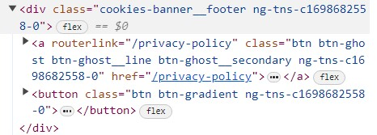

Example 1
Cookies Settings
When buttons (atoms) are combined into multiples (molecules), they create options that the user can choose from and/or use to navigate to further settings.
When buttons (atoms) are combined into multiples (molecules), they create options that the user can choose from and/or use to navigate to further settings.